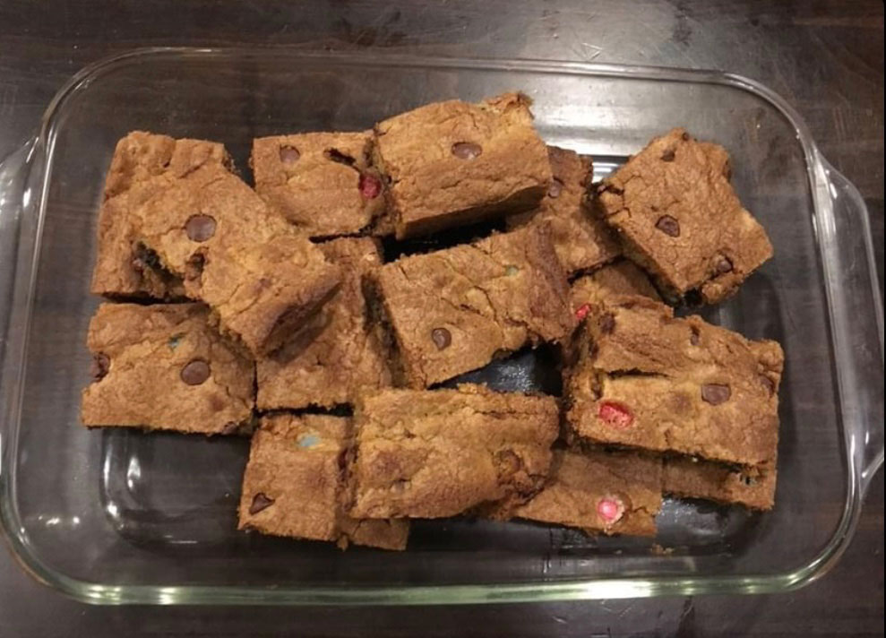

How-To Assignment
Valentines Day Cookie Bars Recipe
A tasty treat for Valentine's Day!
For more Valentine's Recipes Click Here
- Prep:
- Cook:
- Total:
Ingredients
- 1 ¼ cup M&Ms
- 1 ¼ cup mini chocolate chips
- ¾ teaspoon baking soda
- ¾ teaspoon salt
- 2 sticks butter
- 1 cup granulated sugar
- 1 cup brown sugar
- 3 eggs
- 1 ½ teaspoons vanilla
- 3 cups flour
Directions
- Preheat the oven to 350 degrees.
- Line a 9x13 baking dish with foil, leave some overhang to make removal easier.
- Spray foil generously with nonstick cooking spray.
- In a bowl, beat 2 sticks of butter, 1 cup of granulated sugar, and 1 cup of brown sugar together until fluffy.
- Add in 3 eggs and 1 ½ teaspoons of vanilla extract and continue to beat.
- Add 3 cups of flour, ¾ teaspoon of baking soda and ¾ teaspoon of salt and mix until combined.
- Add 1 ½ cups of M&M's and 1 ½ mini chocolate chips and give a final stir, reserving some M&M's and 1 cup of mini chocolate chips for topping cookie bars.
- Transfer cookie dough to a prepared baking dish.
- Press additional M&M'S and white chocolate chips into the top of cookie dough.
- Bake 35 to 40 minutes on the oven rack in the lower third of the oven to prevent over browning.
- Let cool completely and cut into squares.